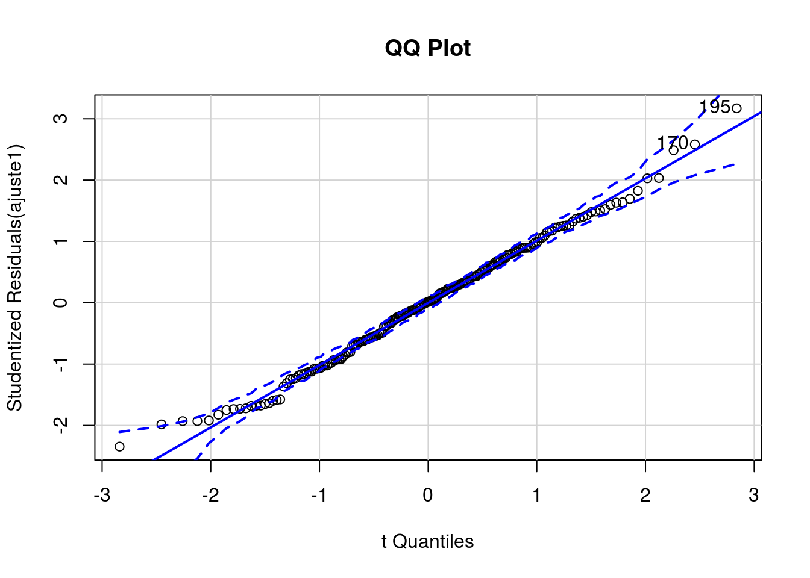

Vendas de cosméticos (Modelo com erros normais)
Cesar Taconeli
Exemplo - Regressão Linear Múltipla para os dados de vendas de cosméticos. O objetivo é propor e ajustar um modelo de regressão para explicar o total em vendas em função do tempo de serviço, idade, anos de estudo e Populacao atendida pelas vendedoras.
vendas <- read.csv2("Normal2.csv")
names(vendas) <- c('Tempo', 'Idade', 'Estudo', 'Populacao', 'Venda')
summary(vendas) # Resumo numérico dos valores das cinco variáveis disponíveis na amostra.## Tempo Idade Estudo Populacao
## Min. : 0.00 Min. :23.0 Min. : 4.00 Min. : 128
## 1st Qu.: 7.00 1st Qu.:35.0 1st Qu.: 6.00 1st Qu.: 7595
## Median :10.00 Median :40.0 Median : 8.00 Median :10399
## Mean : 9.85 Mean :39.6 Mean : 8.65 Mean :10143
## 3rd Qu.:13.00 3rd Qu.:44.0 3rd Qu.:11.00 3rd Qu.:12618
## Max. :20.00 Max. :57.0 Max. :17.00 Max. :21203
## Venda
## Min. : 4008
## 1st Qu.:10508
## Median :12708
## Mean :12597
## 3rd Qu.:14584
## Max. :20775options(digits = 5, scipen = 5)
require(car)
par(cex=1.2)
scatterplotMatrix(vendas, pch = 20, cex.labels = 1.25) Matriz de gráficos de dispersão (com gráficos das densidades estimadas na diagonal). Os gráficos de dispersão fornecem um primeiro indicativo de tendência crescente entre Populacao atendida e total de vendas e, com menor intensidade, entre total de vendas e tempo de serviço.
Ajuste da regressão linear múltipla, considerando as quatro covariáveis. Nota: uma forma equivalente de ajustar o modelo acima seria
##
## Call:
## lm(formula = Venda ~ ., data = vendas)
##
## Coefficients:
## (Intercept) Tempo Idade Estudo Populacao
## 3204.051 174.378 18.012 67.800 0.629Extraindo as estimativas dos parâmetros da regressão.
##
## Call:
## lm(formula = Venda ~ ., data = vendas)
##
## Residuals:
## Min 1Q Median 3Q Max
## -4381 -1299 26 1309 5848
##
## Coefficients:
## Estimate Std. Error t value Pr(>|t|)
## (Intercept) 3204.0510 900.8786 3.56 0.00047 ***
## Tempo 174.3781 40.9153 4.26 0.000032 ***
## Idade 18.0119 22.3506 0.81 0.42129
## Estudo 67.8001 48.0258 1.41 0.15962
## Populacao 0.6286 0.0373 16.86 < 2e-16 ***
## ---
## Signif. codes: 0 '***' 0.001 '**' 0.01 '*' 0.05 '.' 0.1 ' ' 1
##
## Residual standard error: 1910 on 195 degrees of freedom
## Multiple R-squared: 0.634, Adjusted R-squared: 0.626
## F-statistic: 84.3 on 4 and 195 DF, p-value: <2e-16Os resultados do ajuste indicam que o total em vendas aumenta conforme o tempo de experiência e a Populacao atendida. Para as demais variáveis, não há evidência significativa de que estejam relacionadas ao total em vendas. Estima-se que o total em vendas aumente, em média, R$174,37 para um ano a mais de experiência, mantendo-se fixas as demais covariáveis. Quanto à Populacao atendida, estima-se, em média, R$0,628 a mais por pessoa. Assim, para 1000 pessoas a mais na Populacao, estima-se, em média, R$628 a mais no total de vendas, mantendo-se fixas as demais covariáveis.
ajuste1sc <- lm(Venda ~ scale(Tempo)+scale(Idade)+scale(Estudo)+scale(Populacao), data=vendas)
summary(ajuste1sc)##
## Call:
## lm(formula = Venda ~ scale(Tempo) + scale(Idade) + scale(Estudo) +
## scale(Populacao), data = vendas)
##
## Residuals:
## Min 1Q Median 3Q Max
## -4381 -1299 26 1309 5848
##
## Coefficients:
## Estimate Std. Error t value Pr(>|t|)
## (Intercept) 12597 135 93.38 < 2e-16 ***
## scale(Tempo) 708 166 4.26 0.000032 ***
## scale(Idade) 125 155 0.81 0.42
## scale(Estudo) 214 152 1.41 0.16
## scale(Populacao) 2296 136 16.86 < 2e-16 ***
## ---
## Signif. codes: 0 '***' 0.001 '**' 0.01 '*' 0.05 '.' 0.1 ' ' 1
##
## Residual standard error: 1910 on 195 degrees of freedom
## Multiple R-squared: 0.634, Adjusted R-squared: 0.626
## F-statistic: 84.3 on 4 and 195 DF, p-value: <2e-16Neste novo modelo, todas as variáveis explicativas foram padronizadas (subtraímos, de cada valor, a média da variável e dividimos pelo respectivo desvio padrão). Assim, as variáveis agora têm mesma escala e seus efeitos são diretamente comparáveis.
## 1 2 3 4 5 6 7 8 9
## 11734.0 11382.9 9709.5 8605.9 18879.6 5997.7 11349.9 9315.6 15271.2
## 10
## 14719.2Valores ajustados pelo modelo de regressão linear múltipla para as 200 vendedoras.
plot(fitted(ajuste1), vendas$Venda,pch=20, xlab='Vendas ajustadas', ylab='Vendas observadas',las=1,cex = 1.2)
abline(0,1,col='red',lwd = 2)Gráfico de valores observados pelos valores ajustados.
## 2.5 % 97.5 %
## (Intercept) 1427.33465 4980.7673
## Tempo 93.68469 255.0715
## Idade -26.06801 62.0919
## Estudo -26.91661 162.5169
## Populacao 0.55507 0.7021Intervalos de confiança (95%) para os parâmetros do modelo.
Agora, algumas predições.
dnovos <- data.frame(Tempo=c(3,15), Idade=c(30,30), Estudo=c(10,10), Populacao=c(1000,10000))
dnovos## Tempo Idade Estudo Populacao
## 1 3 30 10 1000
## 2 15 30 10 10000Dois perfis de vendedoras para estimarmos o total médio de vendas e predizer o total de vendas
## 1 2
## 5574.1 13323.9## fit lwr upr
## 1 5574.1 4671.4 6476.8
## 2 13323.9 12579.5 14068.3Intervalos de confiança (95%) para o total médio de vendas.
## fit lwr upr
## 1 5574.1 1704.9 9443.4
## 2 13323.9 9488.5 17159.3Intervalos de predição (95%) para a predição do total de vendas.
Agora, vamos fazer estimativas e predições “no atacado”, usando todos os vetores de covariáveis (perfis de vendedoras) da base.
p1 <- predict(ajuste1, interval='confidence', newdata=vendas)
vendas2 <- cbind(vendas[,1:4], p1); head(vendas2, 10) ## Tempo Idade Estudo Populacao fit lwr upr
## 1 1 28 5 11951 11734.0 11048.9 12419.0
## 2 3 23 5 10981 11382.9 10666.1 12099.8
## 3 3 40 7 7616 9709.5 9102.2 10316.8
## 4 6 37 7 5114 8605.9 8090.5 9121.4
## 5 17 42 12 17724 18879.6 18096.1 19663.1
## 6 10 35 5 128 5997.7 5090.0 6905.5
## 7 6 45 6 9358 11349.9 10797.2 11902.7
## 8 7 32 8 6001 9315.6 8817.4 9813.8
## 9 14 41 9 13168 15271.2 14824.1 15718.3
## 10 8 42 11 13710 14719.2 14193.9 15244.6Em vendas2 armazenamos os dados e os correspondentes ICs (95%) para o total médio de vendas.
p2 <- predict(ajuste1, interval ='prediction', newdata=vendas)
vendas3 <- cbind(vendas[,1:4], p2) ;head(vendas3, 10) ## Tempo Idade Estudo Populacao fit lwr upr
## 1 1 28 5 11951 11734.0 7909.6 15558.3
## 2 3 23 5 10981 11382.9 7552.8 15213.1
## 3 3 40 7 7616 9709.5 5898.4 13520.7
## 4 6 37 7 5114 8605.9 4808.3 12403.5
## 5 17 42 12 17724 18879.6 15036.4 22722.8
## 6 10 35 5 128 5997.7 2127.3 9868.1
## 7 6 45 6 9358 11349.9 7547.1 15152.8
## 8 7 32 8 6001 9315.6 5520.3 13110.9
## 9 14 41 9 13168 15271.2 11482.3 19060.2
## 10 8 42 11 13710 14719.2 10920.3 18518.2Em vendas3 armazenamos os dados e os correspondentes IPs (95%) para o total de vendas de novas vendedoras.
Vamos usar o teste F, baseado na extra soma de quadrados para testar algumas hipóteses. H0: Beta(idade)=0 vs H1: Beta(idade)!=0 (testando a significância do efeito da idade)
Modelo de regressão linear múltipla sem considerar a covariável idade.
## Analysis of Variance Table
##
## Model 1: Venda ~ (Tempo + Idade + Estudo + Populacao) - Idade
## Model 2: Venda ~ Tempo + Idade + Estudo + Populacao
## Res.Df RSS Df Sum of Sq F Pr(>F)
## 1 196 712067051
## 2 195 709703391 1 2363660 0.65 0.42Repare que o acréscimo na soma de quadrados (vamos chamar de ASQ) de regressão associado à inclusão do efeito de idade é de 2363660, ao qual temos um grau de liberdade associado.
A estatística do teste é F=(ASQ/1)/QMRes, onde QMRes é o quadrado médio de resíduos do modelo “maior”, que pode ser verificado batendo anova(ajuste1).
Sob H0, F~F(1,195) (faça o teste à mão, para um nível de significância de 5%).
Algumas considerações: 1 - O efeito de idade é não significativo, o que poderia justificar a exclusão dessa variável do modelo.
2 - O teste F é equivalente ao teste t apresentado no summary. Isso não é coincidência, e sempre ocorrerá quando houver apenas um parâmetro do modelo sob teste.
3 - Repare a saída da função anova() aplicada a um único modelo. Ela apresenta a seguinte sequência de testes:
## Analysis of Variance Table
##
## Response: Venda
## Df Sum Sq Mean Sq F value Pr(>F)
## Tempo 1 191606685 191606685 52.65 9.2e-12 ***
## Idade 1 866557 866557 0.24 0.63
## Estudo 1 260371 260371 0.07 0.79
## Populacao 1 1034980948 1034980948 284.37 < 2e-16 ***
## Residuals 195 709703391 3639505
## ---
## Signif. codes: 0 '***' 0.001 '**' 0.01 '*' 0.05 '.' 0.1 ' ' 1I- Linha 1 - Testa a inclusão do efeito de Tempo ao modelo nulo (sem covariáveis) - significativa.
II- Linha 2 - Testa a inclusão do efeito de Idade ao modelo com a covariável tempo - não significativa.
III- Linha 3 - Testa a inclusão do efeito de Anos de estudo ao modelo com as covariáveis tempo e idade - não significativa.
IV- Linha 4 - Testa a inclusão do efeito de Populacao ao modelo com as covariáveis tempo, idade e anos de estudo - significativa.
Nota - Em todos os testes, usa-se QMRes produzida pelo modelo ajustado com mais parâmetros (no caso, o modelo com as quatro covariáveis). Repare que os testes não são equivalentes aos do summary (exceto o último). Por que?
Pergunta - o que aconteceria com a sequência de testes se você mudasse a ordem de entrada das variáveis na função lm?
Ajuste da regressão linear múltipla, considerando as quatro covariáveis, com elas inseridas em ordem invertida.
## Analysis of Variance Table
##
## Response: Venda
## Df Sum Sq Mean Sq F value Pr(>F)
## Populacao 1 1069238001 1069238001 293.79 < 2e-16 ***
## Estudo 1 63098117 63098117 17.34 0.000047 ***
## Idade 1 29270468 29270468 8.04 0.0051 **
## Tempo 1 66107975 66107975 18.16 0.000032 ***
## Residuals 195 709703391 3639505
## ---
## Signif. codes: 0 '***' 0.001 '**' 0.01 '*' 0.05 '.' 0.1 ' ' 1Agora, vamos dar uma olhada no resultado da função Anova (com A maiúsculo), disponível no pacote car.
Anova(ajuste1) A sequência de testes agora é a seguinte: I- Linha 1 - Testa a inclusão do efeito de Tempo ao modelo ajustado com as outras três covariáveis - significativa.
II- Linha 2 - Testa a inclusão do efeito de Idade ao modelo ajustado com as outras três covariáveis - não significativa.
III- Linha 3 - Testa a inclusão do efeito de Anos de estudo ao modelo ajustado com as outras três covariáveis - não significativa.
IV- Linha 4 - Testa a inclusão do efeito de Populacao ao modelo ajustado com as outras três covariáveis - significativa.
Repare que os testes fornecidos por essa função são equivalentes aos do summary. Por que?
Anova(ajuste2) Com as variáveis inseridas em ordem diferente… Mesmo resultado.
Agora, vamos usar o teste F para testar a hipótese de nulidade conjunta H0:Beta(Idade)=Beta(Estudo)=0. Esse teste permite verificar a contribuição ##conjunta das duas variáveis ao modelo.
ajuste3 armazena o modelo ajustado sob H0, ou seja, não incluindo as covariáveis para as quais estamos postulando que o correspondente parâmetro é nulo.
## Analysis of Variance Table
##
## Model 1: Venda ~ Populacao + Tempo
## Model 2: Venda ~ Tempo + Idade + Estudo + Populacao
## Res.Df RSS Df Sum of Sq F Pr(>F)
## 1 197 720103307
## 2 195 709703391 2 10399916 1.43 0.24Repare que a extra-soma de quadrados (10399916, com 2 graus de liberdade) não é significativa (p=0,2421), o que pode justificar a exclusão das duas covariáveis (Estudo e Idade) do modelo.
O teste é obtido por (ASQ/2)/QMRes, sendo QMRes=3639505 extraída do modelo ajustado com mais parâmetros.
Nota: Ao observar que duas covariáveis não são marginalmente significativas no ajuste de um modelo, isso não implica que elas sejam não significativas conjuntamente. A não significância conjunta deve ser testada com base no teste F da extra-soma de quadrados.
Agora, vamos explorar o efeito das covariáveis usando gráficos.
Cada gráfico apresenta a estimativa do total de vendas (e bandas de confiança 95%) para os valores de uma variável (representados no eixo horizontal) fixando as demais variáveis na média.
Diagnóstico - primeiramente vamos extrair os diferentes tipos de resíduos.
Resíduos ordinários.
## 1 2 3 4 5 6 7 8
## 1169.56 -629.76 -325.39 -3108.15 352.55 1638.99 -2963.68 -2190.74
## 9 10
## 1999.96 -2003.70Extraindo (a raiz do) quadrado médio de resíduos produzido pelo ajuste.
## 1 2 3 4 5 6 7 8
## 0.61306 -0.33011 -0.17056 -1.62922 0.18480 0.85912 -1.55350 -1.14834
## 9 10
## 1.04834 -1.05030Resíduos padronizados.
## 1 2 3 4 5 6 7 8
## 0.62348 -0.33627 -0.17283 -1.64473 0.18894 0.88527 -1.57054 -1.15854
## 9 10
## 1.05582 -1.06069Resíduos studentizados (internamente).
## 1 2 3 4 5 6 7 8
## 0.62250 -0.33550 -0.17240 -1.65201 0.18847 0.88478 -1.57651 -1.15956
## 9 10
## 1.05613 -1.06103Resíduos studentizados (externamente).
Veja a documentação da função rstudent para relembrar a diferença desses dois tipos de resíduos.
Repare que há pouca diferença nos valores dos dois tipos de resíduos.
Daqui por diante, vamos usar apenas os resíduos studentizados internamente.
Conjunto de gráficos de diagnóstico padrão do R. O gráfico do canto superior esquerdo é de resíduos ordinários versus valores ajustados. Repare que os resíduos estão dispersos aleatoriamente, sem valores extremos ou padrões não aleatórios. Vamos fazer um gráfico semelhante, mas baseado nos resíduos studentizados:
par(cex=1.4,las=1)
plot(fit, r1, xlab='Valores ajustados', ylab='Resíduos studentizados', pch=20)
identify(fit,r1,rownames(vendas)) # Vamos identificar a observação com resíduo superior a 3
## integer(0)A observação com resíduo superior a 3 está na linha 195. Vamos avaliá-la:
## Tempo Idade Estudo Populacao Venda
## 195 14 44 14 11995 20775## Tempo Idade Estudo Populacao
## Min. : 0.00 Min. :23.0 Min. : 4.00 Min. : 128
## 1st Qu.: 7.00 1st Qu.:35.0 1st Qu.: 6.00 1st Qu.: 7595
## Median :10.00 Median :40.0 Median : 8.00 Median :10399
## Mean : 9.85 Mean :39.6 Mean : 8.65 Mean :10143
## 3rd Qu.:13.00 3rd Qu.:44.0 3rd Qu.:11.00 3rd Qu.:12618
## Max. :20.00 Max. :57.0 Max. :17.00 Max. :21203
## Venda
## Min. : 4008
## 1st Qu.:10508
## Median :12708
## Mean :12597
## 3rd Qu.:14584
## Max. :20775Essa é a vendedora com maior total em vendas. Repare que, embora ela tenha 14 anos de experiência em vendas, atende uma Populacao pequena, de tamanho 11995. Logo, seu desempenho real foi bem superior ao esperado.
Voltando aos gráficos do R. O gráfico do canto superior direito é o gráfico probabilístico normal. Repare um leve afastamento da distribuição normal à esquerda (para valores negativos). Isso não é preocupante, mas vamos fazer um teste para checar a suposição de normalidade.
##
## Shapiro-Wilk normality test
##
## data: r1
## W = 0.993, p-value = 0.45A hipótese nula do teste de Shapiro-Wilks é a hipótese de normalidade. Repare que não se tem evidência significativa contra essa hipótese. Logo, a normalidade dos resíduos está verificada.
O gráfico do canto inferior esquerdo é o gráfico da raiz quadrada dos resíduos studentizados (em módulo) versus valores ajustados. Serve para avaliar a suposição de variância constante (dentre outros).
Não há indícios de heterocedasticidade (variância não constante). Repare que no gráfico são assinalados os maiores resíduos, o que já havíamos identificado anteriormente.
Podemos usar o teste de Breusch-Pagan para testar a hipótese de variância constante para os erros. A hipótese nula é a de variância constante e o teste baseia-se na distribuição qui-quadrado. Pode-se testar a homogeneidade de variâncias quanto à média ou a algum termo específico do modelo.
No R - função ncvTest, pacote car.
## Non-constant Variance Score Test
## Variance formula: ~ fitted.values
## Chisquare = 0.26254, Df = 1, p = 0.608Não há evidência de que a variância dos erros varie conforme a média (p=0,608)
## Non-constant Variance Score Test
## Variance formula: ~ Populacao
## Chisquare = 0.33124, Df = 1, p = 0.565Não há evidência de que a variância dos erros varie conforme o tamanho da Populacao atendida (p=0,564)
Falaremos sobre o gráfico do canto inferior direito mais adiante. Vamos construir mais alguns gráficos.

## [1] 170 195Gráfico quantil-quantil dos resíduos studentizados vs quantis teóricos da distribuição t-Student com envelopes simulados. Nesse tipo de gráfico, espera-se que os pontos, que correspondem aos resíduos, estejam dispersos em torno da reta identidade, entre os limites do envelope. Nota-se um pequeno afastamento na cauda inferior, com um ponto externo ao envelope.
Gráfico de resíduos versus variável adicionada no modelo.
par(cex=1.2,las=1)
plot(vendas$Populacao, r1, xlab='Populacao atendida', ylab='Resíduos studentizados', pch=20)A ausência de padrões nos dois gráficos indica que não há a necessidade de considerar a inclusão dessas variáveis ao modelo em alguma outra escala.
Gráfico de resíduos versus variáveis não inseridas ao modelo.
Ajustando o modelo sem o efeito de Populacao.
plot(vendas$Populacao, rstudent(ajuste12),xlab='Populacao atendida',
ylab='Resíduos studentizados',pch=20)
lines(lowess(vendas$Populacao, rstudent(ajuste12)),col='red',lwd=2)A relação linear entre resíduos e Populacao atendida indica a necessidade da inclusão dessa variável ao modelo. Adicionalmente, indica o efeito linear dessa variável no total de vendas.
Ajustando o modelo sem o efeito de estudo.
plot(vendas$Estudo,rstudent(ajuste12),xlab='Anos de estudo',
ylab='Resíduos studentizados',pch=20)
lines(lowess(vendas$Estudo,rstudent(ajuste12)),col='red',lwd=2)A ausência de relação entre os resíduos e anos de estudo fornece evidencia
de não ser necessária a inclusão dessa variável ao modelo.

Os gráficos de resíduos parciais indicam a relação entre resíduos parciais e as variáveis “anos de estudo” e “Populacao atendida”. Aparentemente, as relações são lineares, indicando a forma como as variáveis devem ser inseridas no modelo.
Agora, vamos calcular medidas de influência com o objetivo de identificar possíveis outliers.
matinf armazena os valores de diversas medidas de influência vistas em aula, como DFBETAs, DFFIT, leverage.
## Potentially influential observations of
## lm(formula = Venda ~ ., data = vendas) :
##
## dfb.1_ dfb.Temp dfb.Idad dfb.Estd dfb.Pplc dffit cov.r cook.d
## 27 0.02 0.04 -0.04 0.02 0.00 0.06 1.08_* 0.00
## 66 -0.01 0.00 0.00 -0.01 0.01 0.01 1.08_* 0.00
## 69 -0.01 0.00 0.00 0.00 0.01 0.01 1.11_* 0.00
## 74 0.28 0.12 -0.33 0.20 -0.17 0.45 0.91_* 0.04
## 82 -0.04 -0.27 0.09 0.13 -0.03 -0.32 0.91_* 0.02
## 89 -0.09 -0.01 0.06 0.03 0.07 0.11 1.08_* 0.00
## 136 0.00 0.01 -0.02 0.01 0.01 -0.03 1.08_* 0.00
## 143 0.00 -0.01 0.01 -0.01 0.01 -0.02 1.08_* 0.00
## 170 0.09 -0.18 0.06 -0.17 0.10 0.39 0.89_* 0.03
## 173 0.03 0.02 0.00 -0.03 -0.05 0.06 1.08_* 0.00
## 195 -0.21 0.05 0.01 0.32 0.14 0.47 0.81_* 0.04
## hat
## 27 0.05
## 66 0.05
## 69 0.08_*
## 74 0.03
## 82 0.02
## 89 0.06
## 136 0.05
## 143 0.05
## 170 0.02
## 173 0.05
## 195 0.02Aplicando o summary, o R destaca as observações com valores que ultrapassam o ponto de corte para ao menos uma das medidas. Repare que exceto uma das observações destacadas, todas as demais tem valor acima do ponto de corte para a estatística COVRATIO. Repare que a observação que produz menor valor do COVRATIO é a 195 que, se você lembrar, é a vendedora com maior total de vendas (volte alguns códigos atrás).
A observação 69 é marcada como tendo elevado leverage, configurando um ponto de alavancagem. Vamos ver quem é ela.
## Tempo Idade Estudo Populacao
## Min. : 0.00 Min. :23.0 Min. : 4.00 Min. : 128
## 1st Qu.: 7.00 1st Qu.:35.0 1st Qu.: 6.00 1st Qu.: 7595
## Median :10.00 Median :40.0 Median : 8.00 Median :10399
## Mean : 9.85 Mean :39.6 Mean : 8.65 Mean :10143
## 3rd Qu.:13.00 3rd Qu.:44.0 3rd Qu.:11.00 3rd Qu.:12618
## Max. :20.00 Max. :57.0 Max. :17.00 Max. :21203
## Venda
## Min. : 4008
## 1st Qu.:10508
## Median :12708
## Mean :12597
## 3rd Qu.:14584
## Max. :20775## Tempo Idade Estudo Populacao Venda
## 69 11 53 6 21203 19867Repare que essa vendedora atende à região com maior Populacao. Adicionalmente, é uma das vendedoras com maior idade e com menor tempo de estudo.
Vamos verificar o impacto (conjunto) das observações 69 e 195 no modelo, ajustando um novo modelo sem essas observações.
A função update permite o ajuste de um novo modelo, atualizando o anterior. Repare que a atualização corresponde a definição de um subconjunto dos dados.
## Calls:
## 1: lm(formula = Venda ~ ., data = vendas)
## 2: lm(formula = Venda ~ ., data = vendas, subset = -c(69, 195))
##
## Model 1 Model 2
## (Intercept) 3204 3396
## SE 901 901
##
## Tempo 174.4 172.6
## SE 40.9 40.1
##
## Idade 18.0 17.5
## SE 22.4 22.2
##
## Estudo 67.8 52.8
## SE 48.0 47.4
##
## Populacao 0.6286 0.6232
## SE 0.0373 0.0374
## A função compareCoefs, do pacote car, dispõe lado a lado as estimativas e erros padrões de dois modelos. Repare que a alteração mais substancial nos dois ajustes se refere à estimativa do efeito de ajuste (de 67,8 para 52,8). No entanto, nos dois ajustes o efeito de anos de estudo é não significativo. Portanto, as conclusões para os dois modelos são semelhantes.